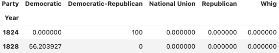

# import packages
import pandas as pd
import numpy as np
import warnings
warnings.simplefilter(action='ignore', category=FutureWarning)2 Pandas I
This discussion is all about practicing using pandas, and testing your knowledge about its various functionalities to accomplish small tasks.
We will be using the elections dataset from lecture.
elections = pd.read_csv('elections.csv')
elections.head(10)| Year | Candidate | Party | Popular vote | Result | % | |
|---|---|---|---|---|---|---|
| 0 | 1824 | Andrew Jackson | Democratic-Republican | 151271 | loss | 57.210122 |
| 1 | 1824 | John Quincy Adams | Democratic-Republican | 113142 | win | 42.789878 |
| 2 | 1828 | Andrew Jackson | Democratic | 642806 | win | 56.203927 |
| 3 | 1828 | John Quincy Adams | National Republican | 500897 | loss | 43.796073 |
| 4 | 1832 | Andrew Jackson | Democratic | 702735 | win | 54.574789 |
| 5 | 1832 | Henry Clay | National Republican | 484205 | loss | 37.603628 |
| 6 | 1832 | William Wirt | Anti-Masonic | 100715 | loss | 7.821583 |
| 7 | 1836 | Hugh Lawson White | Whig | 146109 | loss | 10.005985 |
| 8 | 1836 | Martin Van Buren | Democratic | 763291 | win | 52.272472 |
| 9 | 1836 | William Henry Harrison | Whig | 550816 | loss | 37.721543 |
Write a line of code that returns the elections table sorted in descending order by "Popular vote". Store your result in a variable named sorted. Would calling sorted.iloc[[0], :] give the same result as sorted.loc[[0], :]?
Code
sorted = elections.sort_values("Popular vote", ascending = False)
sorted| Year | Candidate | Party | Popular vote | Result | % | |
|---|---|---|---|---|---|---|
| 178 | 2020 | Joseph Biden | Democratic | 81268924 | win | 51.311515 |
| 182 | 2024 | Donald Trump | Republican | 77303568 | win | 49.808629 |
| 183 | 2024 | Kamala Harris | Democratic | 75019230 | loss | 48.336772 |
| 179 | 2020 | Donald Trump | Republican | 74216154 | loss | 46.858542 |
| 162 | 2008 | Barack Obama | Democratic | 69498516 | win | 53.023510 |
| ... | ... | ... | ... | ... | ... | ... |
| 110 | 1956 | T. Coleman Andrews | States' Rights | 107929 | loss | 0.174883 |
| 141 | 1992 | Bo Gritz | Populist | 106152 | loss | 0.101918 |
| 99 | 1948 | Claude A. Watson | Prohibition | 103708 | loss | 0.212747 |
| 89 | 1932 | William Z. Foster | Communist | 103307 | loss | 0.261069 |
| 6 | 1832 | William Wirt | Anti-Masonic | 100715 | loss | 7.821583 |
187 rows × 6 columns
Explanation
We can sort a DataFrame by a column using the .sort_values() function! Remember to specify ascending = False, or else it will sort in increasing order.
sorted.iloc[[0], :]| Year | Candidate | Party | Popular vote | Result | % | |
|---|---|---|---|---|---|---|
| 178 | 2020 | Joseph Biden | Democratic | 81268924 | win | 51.311515 |
sorted.loc[[0], :]| Year | Candidate | Party | Popular vote | Result | % | |
|---|---|---|---|---|---|---|
| 0 | 1824 | Andrew Jackson | Democratic-Republican | 151271 | loss | 57.210122 |
Explanation
The difference is that .loc[] uses label-based indexing, while .iloc[] uses integer position-based indexing. Using .loc[] will simply grab the row with the label 0 regardless of where it is, while .iloc[] will grab the first row of the sorted DataFrame.
Using Boolean slicing, write one line of pandas code that returns a DataFrame that only contains election results from the 1900s.
Code
elections[(elections["Year"] >= 1900) & (elections["Year"] < 2000)]| Year | Candidate | Party | Popular vote | Result | % | |
|---|---|---|---|---|---|---|
| 54 | 1900 | John G. Woolley | Prohibition | 210864 | loss | 1.526821 |
| 55 | 1900 | William Jennings Bryan | Democratic | 6370932 | loss | 46.130540 |
| 56 | 1900 | William McKinley | Republican | 7228864 | win | 52.342640 |
| 57 | 1904 | Alton B. Parker | Democratic | 5083880 | loss | 37.685116 |
| 58 | 1904 | Eugene V. Debs | Socialist | 402810 | loss | 2.985897 |
| ... | ... | ... | ... | ... | ... | ... |
| 146 | 1996 | Harry Browne | Libertarian | 485759 | loss | 0.505198 |
| 147 | 1996 | Howard Phillips | Taxpayers | 184656 | loss | 0.192045 |
| 148 | 1996 | John Hagelin | Natural Law | 113670 | loss | 0.118219 |
| 149 | 1996 | Ralph Nader | Green | 685297 | loss | 0.712721 |
| 150 | 1996 | Ross Perot | Reform | 8085294 | loss | 8.408844 |
97 rows × 6 columns
Explanation
We can “filter” DataFrames by using boolean slicing! 1. Construct a boolean Series that is True if a row contains election results from the 1900s, and False otherwise. * We can use the & (and) logical operator! 1900 or after and before 2000. 2. Use the boolean Series to slice the DataFrame * df[boolean_array]
Write one line of pandas code that returns a Series, where the index is the "Party", and the values are how many times that party won an election. Only include parties that have won an election.
Code
elections[elections["Result"] == "win"]["Party"].value_counts()Party
Republican 24
Democratic 23
Whig 2
Democratic-Republican 1
National Union 1
Name: count, dtype: int64Code
elections[elections["Result"] == "win"].groupby("Party").size()Party
Democratic 23
Democratic-Republican 1
National Union 1
Republican 24
Whig 2
dtype: int64Explanation
Two parts to this! 1. Filter DataFrame to only include winners. * Use boolean slicing again! Construct a boolean Series that has True if the row contains a winner, and False otherwise * elections[elections["Result"] == "win"] 2. Within filtered DataFrame (let’s call this winners), count the number of times each party won an election. Two ways to do this. * Extract the Party column from winners, and call value_counts(). * winners["Party"].value_counts() * Group by the Party column, and aggregate by the number of rows in each sub-DataFrame. * winners.groupby("Party").size() * The two methods above return the same thing, except .value_counts() sorts by the values in decreasing order, while .groupby() sort by the index in increasing order!
Write a line of pandas code that returns a Series whose index is the years and whose values are the number of candidates that participated in those years’ elections.
Code
elections["Year"].value_counts().head() #.head() to limit outputYear
1996 7
1948 6
1976 6
2004 6
2008 6
Name: count, dtype: int64Code
elections.groupby("Year").size().head() #.head() to limit outputYear
1824 2
1828 2
1832 3
1836 3
1840 2
dtype: int64Explanation
Very similar to Problem 3! Might even be easier, actually. Each row corresponds to one candidate per election cycle, so we simply need to count the number of times each Year appears in the elections DataFrame. Just like in Problem 3, two ways to do this.
- Extract the Year column as a
Series, call.value_counts()on it.elections["Year"].value_counts()
- Group by the Year column, creating a sub-
DataFramefor each unique Year. Aggregate by.size(), counting the number of rows in each sub-DataFrame.elections.groupby("Year").size()
Write a line of pandas code that creates a filtered DataFrame named filtered_parties from the elections dataset and keeps only the parties that have at least one election % more than 50%.
Code
filtered_parties = elections.groupby("Party").filter(lambda df: df["%"].max() > 50)
filtered_parties| Year | Candidate | Party | Popular vote | Result | % | |
|---|---|---|---|---|---|---|
| 0 | 1824 | Andrew Jackson | Democratic-Republican | 151271 | loss | 57.210122 |
| 1 | 1824 | John Quincy Adams | Democratic-Republican | 113142 | win | 42.789878 |
| 2 | 1828 | Andrew Jackson | Democratic | 642806 | win | 56.203927 |
| 4 | 1832 | Andrew Jackson | Democratic | 702735 | win | 54.574789 |
| 7 | 1836 | Hugh Lawson White | Whig | 146109 | loss | 10.005985 |
| ... | ... | ... | ... | ... | ... | ... |
| 176 | 2016 | Hillary Clinton | Democratic | 65853514 | loss | 48.521539 |
| 178 | 2020 | Joseph Biden | Democratic | 81268924 | win | 51.311515 |
| 179 | 2020 | Donald Trump | Republican | 74216154 | loss | 46.858542 |
| 182 | 2024 | Donald Trump | Republican | 77303568 | win | 49.808629 |
| 183 | 2024 | Kamala Harris | Democratic | 75019230 | loss | 48.336772 |
99 rows × 6 columns
Explanation
This filtering is different from boolean slicing! Boolean slicing considers rows individually, while .filter() considers groups of rows. Rows of a sub-DataFrame either all make it, or none make it.
- Group by the Party column, creating one sub-
DataFramefor each party.elections.groupby("Party")
- Filter using
.filter()- Pass in a function into
.filter()that takes in aDataFrameand returnsTrueorFalse. Can be a lambda function! .filter(lambda df: df["%"].max() > 50)- If the lambda function returns
True, it means you keep the entire sub-DataFrame.Falsemeans you exclude it entirely!
- If the lambda function returns
- Pass in a function into
Write a line of pandas code that uses the filtered_parties DataFrame to return a new DataFrame with row indices that correspond to the year and columns that correspond to each party. Each entry should be the total percentage of votes for all the candidates that ran during that particular year for the specified party. Missing values from the dataset (the cases where a party did not have a candidate in a particular year) should be entered as 0. Below is an example.

Code
elections_pivot = filtered_parties.pivot_table(
index = "Year",
columns = "Party",
values = "%",
aggfunc = np.sum,
fill_value = 0)
elections_pivot.head(10)| Party | Democratic | Democratic-Republican | National Union | Republican | Whig |
|---|---|---|---|---|---|
| Year | |||||
| 1824 | 0.000000 | 100.0 | 0.0 | 0.000000 | 0.000000 |
| 1828 | 56.203927 | 0.0 | 0.0 | 0.000000 | 0.000000 |
| 1832 | 54.574789 | 0.0 | 0.0 | 0.000000 | 0.000000 |
| 1836 | 52.272472 | 0.0 | 0.0 | 0.000000 | 47.727528 |
| 1840 | 46.948787 | 0.0 | 0.0 | 0.000000 | 53.051213 |
| 1844 | 50.749477 | 0.0 | 0.0 | 0.000000 | 49.250523 |
| 1848 | 42.552229 | 0.0 | 0.0 | 0.000000 | 47.309296 |
| 1852 | 51.013168 | 0.0 | 0.0 | 0.000000 | 44.056548 |
| 1856 | 45.306080 | 0.0 | 0.0 | 33.139919 | 0.000000 |
| 1860 | 0.000000 | 0.0 | 0.0 | 39.699408 | 0.000000 |
Explanation
First thing to notice is that the columns are values of the Party column! This tells us that what we see is a pivot table.
- Use the
.pivot_table()function onfiltered_partiesindex = "Year"andcolumns = "Party", saying that the unique values of Year should make up the row indices, and the unique values of Party should make up the columns.values = "%"indicates that we populate the cells with the % values for each combination of Year, Partyaggfunc = np.sumdescribes how to aggregate the values in a cellfill_value = 0says to impute 0 in case there is no % value for a specific Year, Party combination